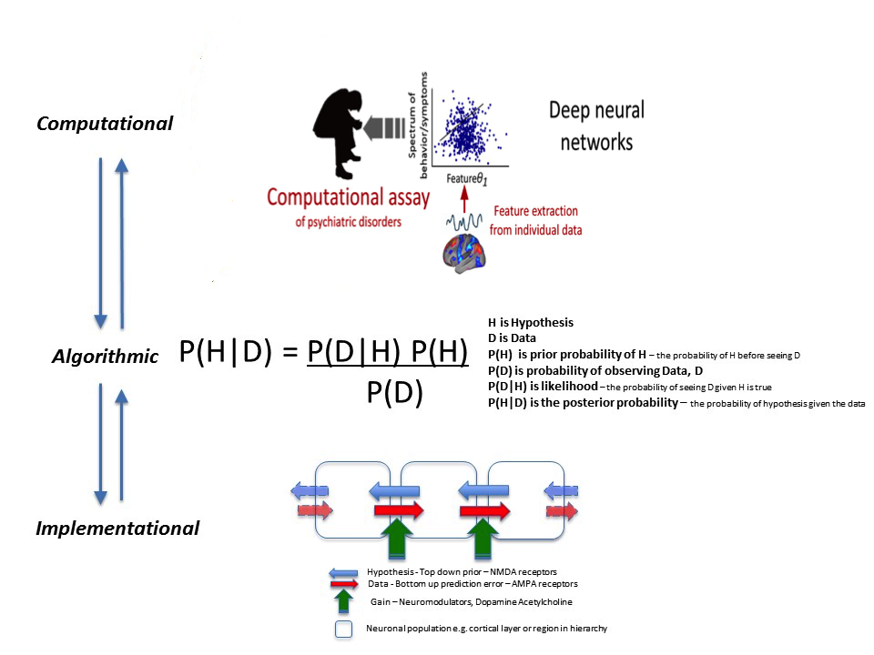

Machine Learning Experience
In September 2021, I’ve started developing (under supervision of with Dr. Alex Lukyanov, Scientific Director BISC Global) ML models as a part of the pipeline which provides a software as a medical device that is capable of analysis predicting healthy vs non-healthy status in psychiatry. This medical device captures different characteristics (specific symptoms) which, taken together, define significant attributes that can be used to eliminate healthy vs non-healthy patients, or continue with further diagnostics for the patients included into the high-risk group. It’s a very exciting multidisciplinary projects combining artificial intelligence / machine learning, computer science and computational psychiatry. My primary goal in this project is to understand the connection between different elements of challenging problems, and to develop approach which converges ML based learned models with model-based predictions so that all numerical and experimental data can help self-inform predictions. This allows effective building of UQ into a cognitive computing. In the current project, we investigate a novel technique for extracting self-organized features using deep neural networks. We expect that these extracted features could reflect individual’s brain states which are useful for the evaluation and treatment of psychiatric disorders. Particularly, we focus on the dimensional approach for psychiatric disorders, which attempts to find biological basis corresponding to observable behavioral and symptom measures, regardless of conventional categories of psychiatric disorder.
Zhijing is a talented young researcher who is helping us in developing technologies of examination and evaluation for psychiatric disorders based on computational psychiatry by developing machine learning capabilities. He is very dedicated to learn new things and very enthusiastic in pushing his boundaries to solve new challenging problems.
The proposed technique could be one of the base technologies of examination and evaluation for psychiatric disorders based on computational psychiatry (computational assay).
The overall roadmap of the projects can be shown on the following figure:
At this moment, I am working on processing input data and developing necessary building blocks for machine learning computations. Stay tuned to get more info soon.